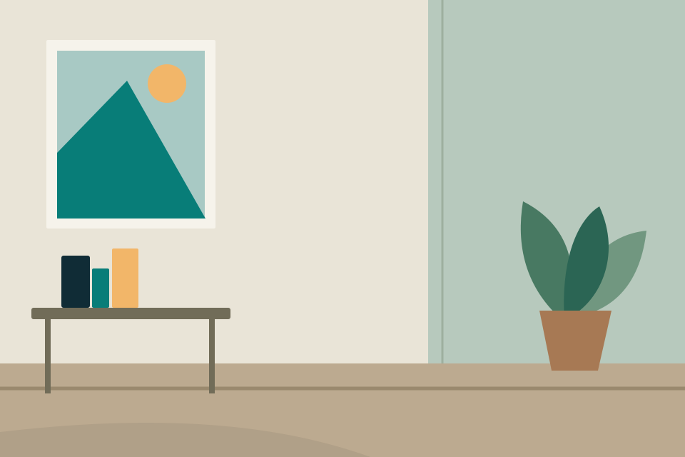
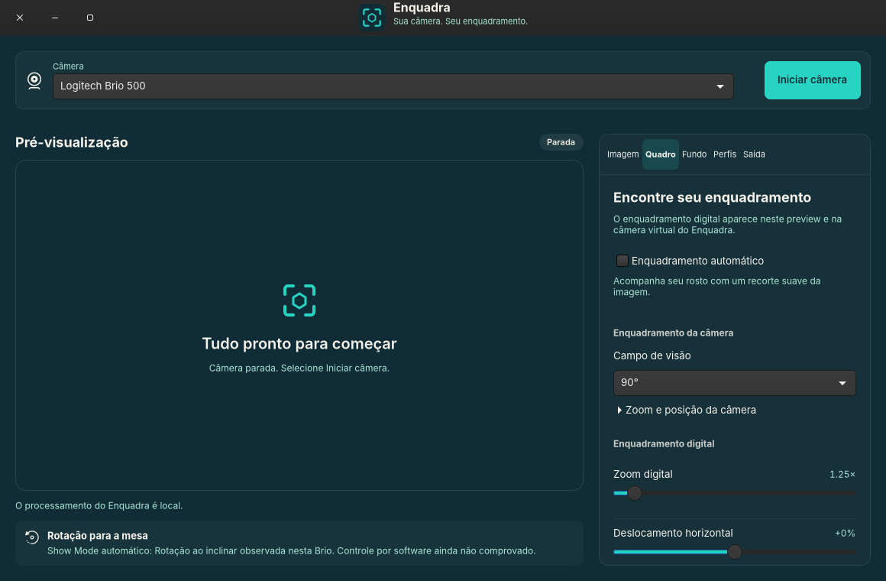

Encontre seu quadro
Campo de visão de 65°, 78° ou 90° na Brio 500. Use zoom, recorte, posição e espelhamento digitais — ou deixe o enquadramento automático local acompanhar seu rosto.
Câmera no Linux. Do seu jeito.
Ajuste a imagem, encontre seu lugar no quadro e escolha o fundo. O Enquadra dá à sua Brio 500 um espaço próprio no Linux.
Alpha 0.1.0-alpha.1 · pacote .deb · projeto em desenvolvimento

Cena original: ambiente e enquadramento amplo.
Demonstração visual — não acessa sua câmera.
UM QUADRO QUE É SEU
Da imagem da câmera à saída para suas chamadas: ajustes reunidos em uma aplicação GTK, feita para Linux.
Campo de visão de 65°, 78° ou 90° na Brio 500. Use zoom, recorte, posição e espelhamento digitais — ou deixe o enquadramento automático local acompanhar seu rosto.
Desfoque o ambiente ou use um PNG ou JPEG como fundo. A segmentação é feita neste computador. Sem enviar seu vídeo para um serviço de processamento.
Salve seus ajustes em perfis e envie a imagem para uma câmera virtual com v4l2loopback. Selecione essa saída em aplicações compatíveis com câmeras V4L2.

SEU COMPUTADOR É O ESTÚDIO
O Enquadra processa enquadramento e fundo localmente. O aplicativo de reunião escolhido controla o envio do vídeo. Este site não tem analytics, rastreamento ou acesso à sua câmera.
COMECE NO LINUX
Esta é uma versão alpha. Recursos e compatibilidade ainda estão evoluindo. Leia as instruções antes de usar em uma chamada importante.
Baixar para LinuxValidado em hardware: Brio 500 (046d:0943), Ubuntu 26.04.1.
Ubuntu 24.04 é candidato, sem validação em hardware.
Baixe o .deb e compare seu checksum SHA-256 com o arquivo da mesma versão.
Baixar SHA256SUMS ↓Na pasta em que salvou o pacote, execute:
sudo apt install ./enquadra_0.1.0~alpha1_all.debSelecione sua câmera e inicie a pré-visualização. Para usar a saída em chamadas, configure o módulo v4l2loopback seguindo o guia; essa etapa requer autenticação administrativa.
Ver guia de instalação e câmera virtual ↗Secure Boot pode exigir assinatura e registro do módulo. A configuração da câmera virtual é uma etapa explícita; instalar o pacote não garante que o módulo esteja ativo.
ANTES DA PRIMEIRA CHAMADA
A validação em hardware foi feita com a Logitech Brio 500 (046d:0943). Outras câmeras V4L2 podem apresentar controles diferentes e ainda não têm compatibilidade prometida. Ubuntu 24.04 também aguarda validação em hardware.
O enquadramento automático do Enquadra é feito por software local, com detecção de rosto e recorte digital. Não é o RightSight nativo da câmera. HDR e controles proprietários não são oferecidos.
A rotação automática ao inclinar a Brio foi observada pelo usuário, como comportamento do firmware. O Enquadra não oferece um controle proprietário para ativar ou desativar Show Mode.
Ela disponibiliza a imagem já recortada e com o fundo escolhido para outras aplicações. A saída usa v4l2loopback, um módulo do kernel que precisa ser configurado. A aplicação de chamadas precisa aceitar a câmera V4L2 e pode exigir permissão própria.
Esta versão ainda está em desenvolvimento e pode ter falhas ou mudanças de comportamento. A validação se limita ao hardware e sistema informados. Consulte as notas da versão e relate problemas no repositório.
Experimente, leia o código, ajude a construir.